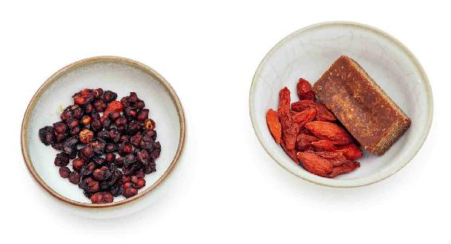
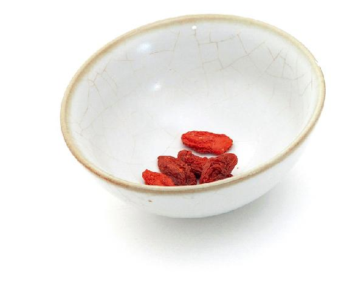
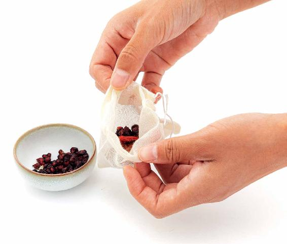
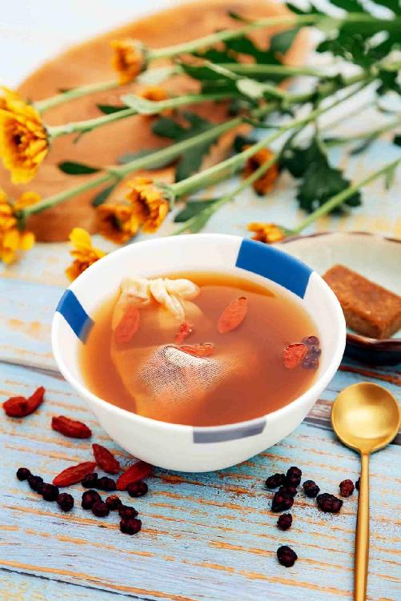
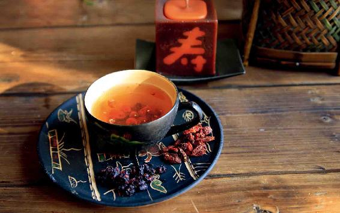
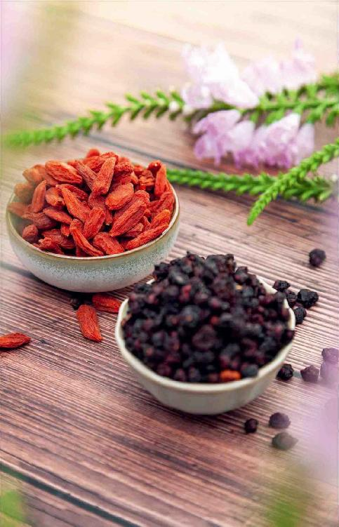

父亲节是挨着夏至节气的，过完父亲节,差不多就是盛夏了。
盛夏是一年中最闷热难熬的一个时节，但也是一年中养心的一个关键时期。因此，在父亲节来临的时候，您可以送一份既能保中老年人夏季平安，又适合平时养生的药茶礼包给父亲。

原料：枸杞子6克，五味子6克，红糖（可不放）。


做法：
先把枸杞子和五味子分别装入茶包袋，然后放入茶壶，冲入沸水洗一下茶，把水倒掉，再次冲入沸水闷20分钟就可以喝了。
允斌叮嘱：
1. 如果您父亲是一个平时怕吃酸味儿的人，那您可以在茶包里放上一块红糖；如果怕吃糖，那您就不用放。这是一人一天的量，您可以一次多准备几份，把它们放在一个礼包里或者礼盒里送给父亲。
2. 五味子比较难出味，您在装入茶包前可以稍微捣碎一下，这样味道才能够出来。
3. 还可以把五味子和枸杞子放在锅里用水煮，煮10多分钟，然后再喝，这样效果会更好。
4. 这道茶饮无论是泡还是煮，都是可以反复冲泡或者用水煮的，味道依然会浓郁。

每天在什么时候喝呢？不论早晚都是可以喝的。
如果您同时还在喝姜枣茶，那您就上午喝姜枣茶，下午喝二子延寿茶。如果单喝姜枣茶觉得出汗有点多的人，就把这两个茶方放在一起煮来喝。
这道二子延寿茶可以一直喝到立秋。如果家里的老人喝了二子延寿茶后觉得很舒服，秋冬也是可以一直喝下去的。
二子延寿茶是可以补肾的，还可以补肝、补心，整个五脏它都能补到，而且补的是五脏之气。
一般来说，老年人的脏器都有点虚衰，但用二子延寿茶来补，不仅觉得很舒服，还有延年益寿的效果，也能改善老年人的视力和听力。
其实，不仅老年男性可以喝，老年女性也可以喝，甚至一些中年人也可以喝。如果您觉得自己的身体比较虚，特别是觉得自己平时气虚无力的朋友，都是可以喝这道茶饮的。
第一，感冒发热有痰的时候不要喝。
哪些情况下，我们不可以喝这道茶呢？就是在您感冒发热有痰的时候暂时不要喝，但如果只是咳嗽没有痰，那是可以喝的。
其实，五味子还用于配伍一些治疗虚咳、久咳的方子。
第二，吃一些退热中成药的时候不要喝。
在吃一些退热中成药，特别是服用双黄连口服液的时候，因为里面含有黄芩，暂时不要喝二子延寿茶，否则会影响疗效。
第三，服用含黄芩的汤药时不要喝。
如果家里老年人正在服用的汤药中含有黄芩这一味药的话，最好不饮用这道茶。

当您父亲饮用这道茶的时候，您可以给老人家解释一下这道茶喝起来的味道。因为茶里面的五味子具有酸、苦、甘、辛、咸五种味道，这也是它取名五味子的由来。
五味子的酸味很突出，所以这道茶饮喝起来会觉得有点酸酸的、涩涩的，一种比较有意思的、复杂的味道。如果老年人喝不惯这种味道，可以加一点糖或者蜂蜜。
五味子的宝贵之处就在于它的这五种复合的味道，这五种味道分别入五脏，所以古人认为五味子是可以补到五脏的。
唐代的药王孙思邈就特别提示大家，农历五月的时候要常服五味子来补五脏之气。同时，他也提到农历六月还要继续吃五味子来补身体的气。因此，在这个时节乃至接下来的盛夏，请家里的老人来喝这道茶饮都很合适。
为什么我要把二子延寿茶作为在父亲节献给父亲的礼物呢？
因为传统中医讲究男子以肾为本，中老年男性如果要养生，那就要以养肾为第一要点，而肝、肾又是同源的，心、肾是相通的。
如果要想补好肾，必须要补好心和肝。这道二子延寿茶五脏通补，但又偏重于补心、肝、肾，因此对于中老年男性，这是一道很合适的补养茶。
特别是在夏季，五味子和枸杞子相配很适合，不光是对老年男性，对老年女性也是合适的。
因为在夏天，老年人养生的要点就是补气养阴，这个时候天气热，人出汗多，一出汗就容易伤气伤阴，而老年人最容易气阴两虚了。

气阴两虚的表现是什么呢？
第一，觉得气短，好像吸气吸不够，吸不了很深。
第二，就是口渴，口干舌燥。
第三，浑身觉得酸酸软软的，很疲劳。
第四，胃口不好，不想吃东西。
第五，感觉心里又烦躁又热。
老年人在夏天的时候，如果一直喊热要开空调，那您就要注意了，他不见得是真热，而是阴虚了。
很多老年人晚上睡不好，特别是早上醒得特别早，而人衰老的一个信号就是早上醒得越来越早。而这种早，并不是天亮的时候跟着太阳一起起床，而是在天还没有亮、黑乎乎的时候就已经醒来了，冬天的时候也是这样，那么这就属于早醒了。
如果您家里的老人早醒，可以让他喝这道茶饮，能让他在早上睡得更加安稳。
这道茶饮对于气阴两虚、早上睡不好觉的老年人都是很合适的，它既可以补五脏之气，又可以养阴，防止人体的元气外泄。
五味子还有一个别称，叫“嗽神”，可用于调理虚咳，这种现象也是老年人居多。
有一天陪父亲散步时，谈到现代人进补的误区，父亲说：“人的身体，只要有一个突发因素，就可能垮下去。如果要想身体好，就必须全面地进行整体调理。每天抽烟、喝酒、熬夜，不要妄想只吃一点补药，就可能好起来。”
所以，我父亲从不会事到临头才临时抱佛脚吃补品，而是提前预防，觉得对自己身体有长期好处的食物，就会经常吃、每天吃，比如二子延寿茶中的五味子和枸杞。
古人说枸杞“久服轻身不老、耐寒暑”，他一年四季每天都会吃，有时泡水，有时抓一把当干果吃。吃法随意，贵在不间断。还有五味子补五脏，夏天老人离不开，他就不会嫌它酸，会按时地来吃。
读者评论：喝了十几天二子延寿茶，终于解决了失眠问题
狮子座的Lin：以前我失眠，晚上有点声音就会醒来，而且再也睡不着。今年喝了十几天二子延寿茶，终于解决了失眠问题，太开心了！
允斌解惑：二子延寿茶里的五味子要用生的
刘鹏越：二子延寿茶是用生五味子，还是醋五味子？
允斌：用生五味子。
秀英：喝银耳羹的时候，也可以喝二子延寿茶吗？
允斌：可以的。